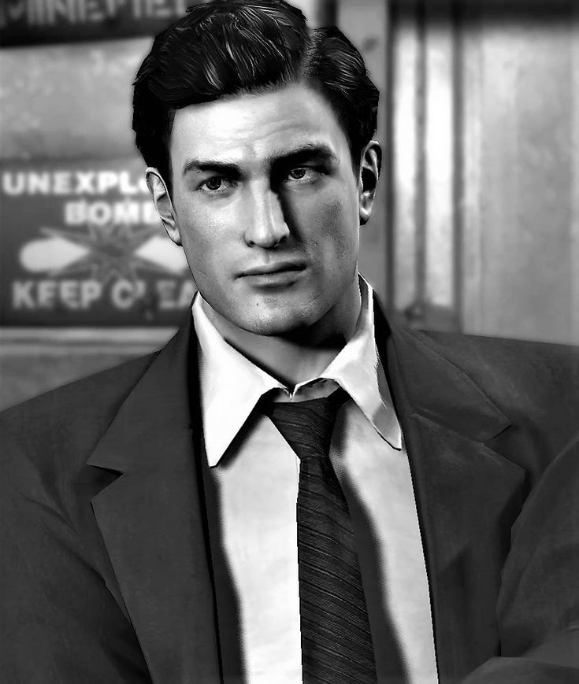
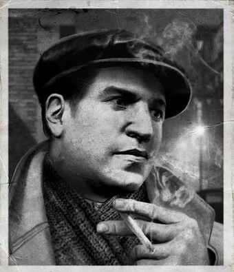
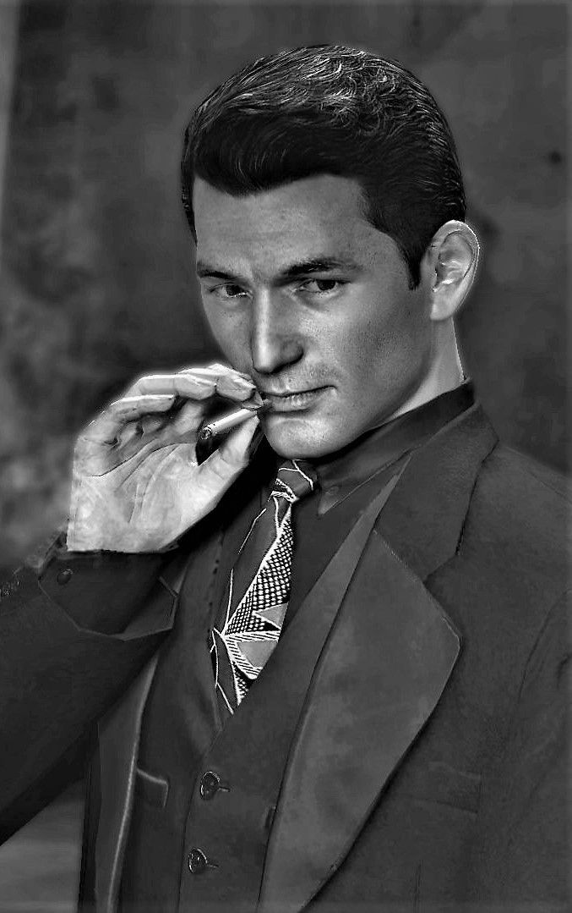
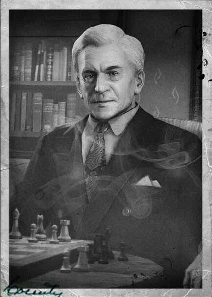

Klíčové osobnosti, které určovaly osud Vita Scaletty v podsvětí.

Hlavní hrdina
Vito Scaletta
Český dabing: Martin Trnavský
Syn sicilských přistěhovalců, který se po návratu z druhé světové války snaží splatit
otcovy dluhy. Společně s Joem postupně stoupá v hierarchii mafiánské rodiny Clemente a Falcone.

Nejlepší přítel
Joe Barbaro
Český dabing: Vlastimil Zavřel
Vitův nerozlučný kamarád z dětství. Impulzivní, hlučný milovník rychlých aut, drahých obleků
a dobrého jídla, který Vita přivedl do světa organizovaného zločinu.

Spojenec
Henry Tomasino
Český dabing: Jan Šťastný
Klidný, profesionální a rozvážný mafián, který zprostředkuje Vitovi a Joeovi ty nejvýnosnější
zakázky v Empire Bay.

Mentor
Leo Galante
Český dabing: Dalimil Klapka
Zkušený consigliere rodiny Vinci. Ve vězení se stane Vitovým rádcem a později mu
několikrát zachrání život.